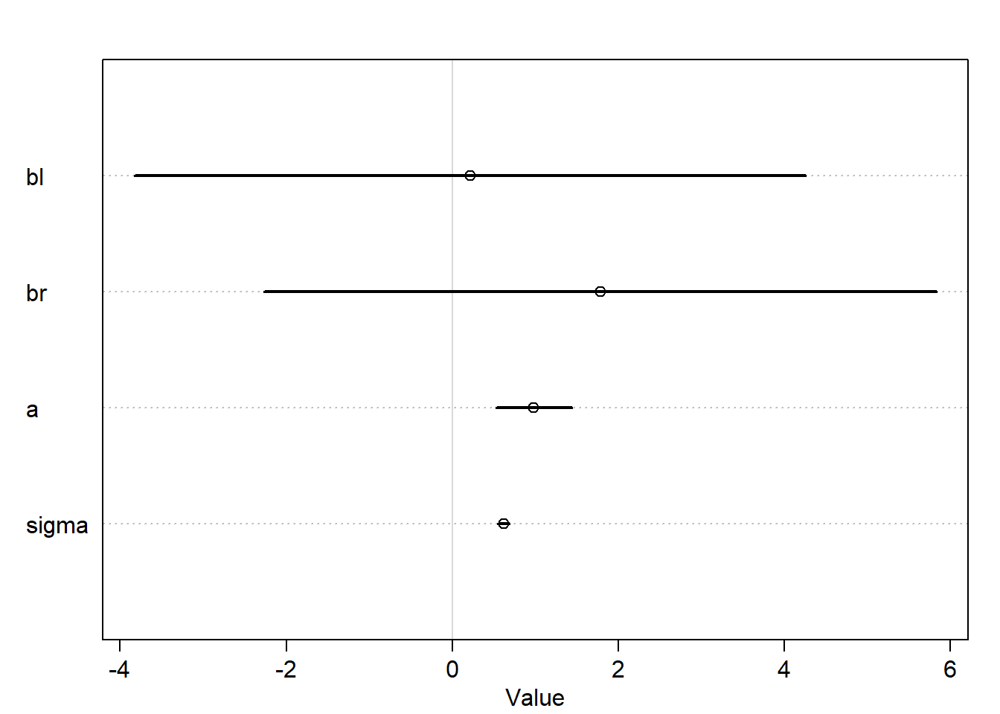
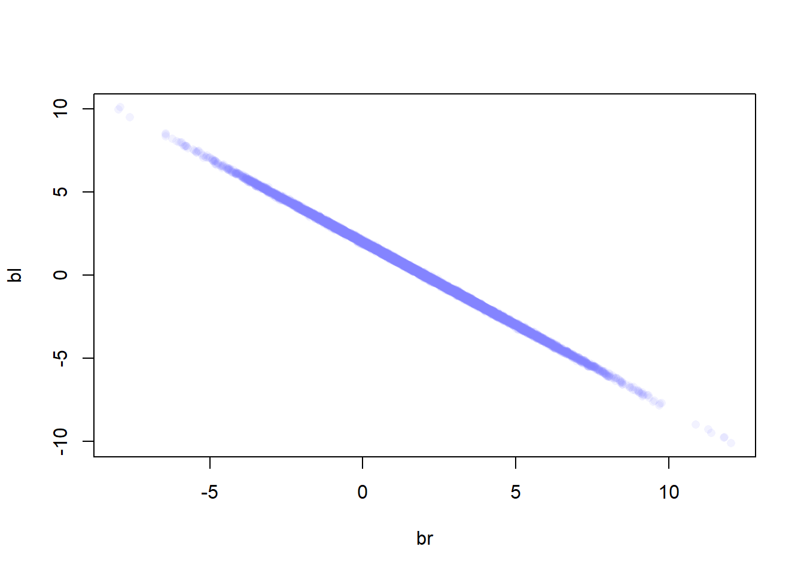
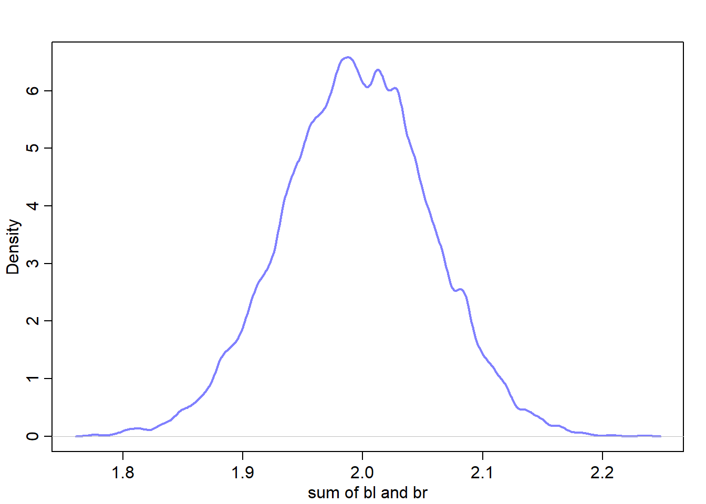
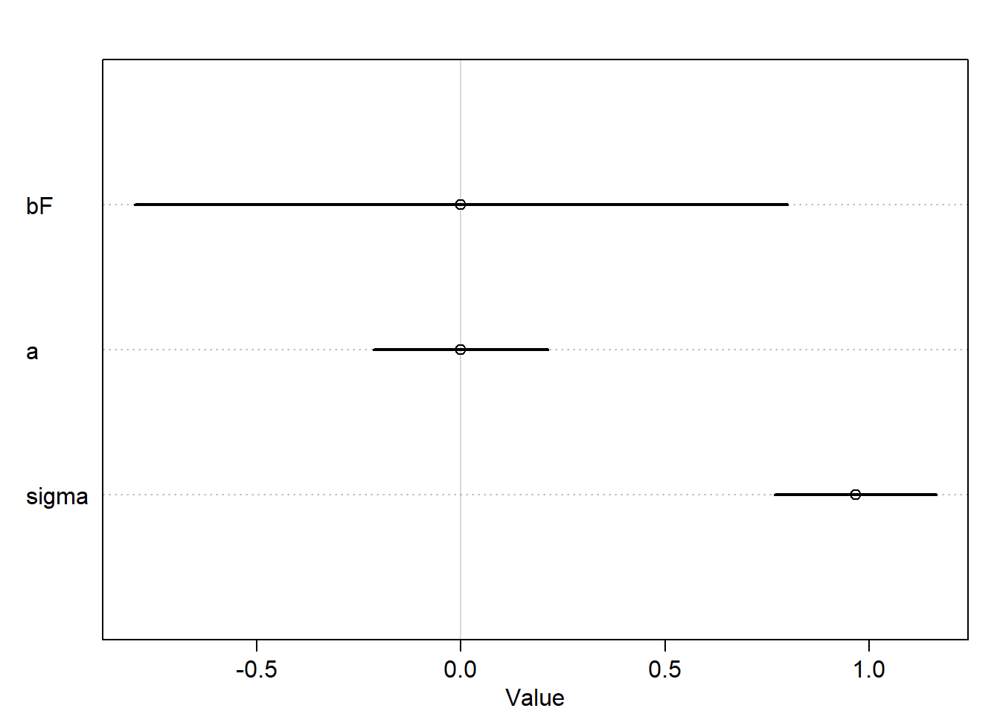
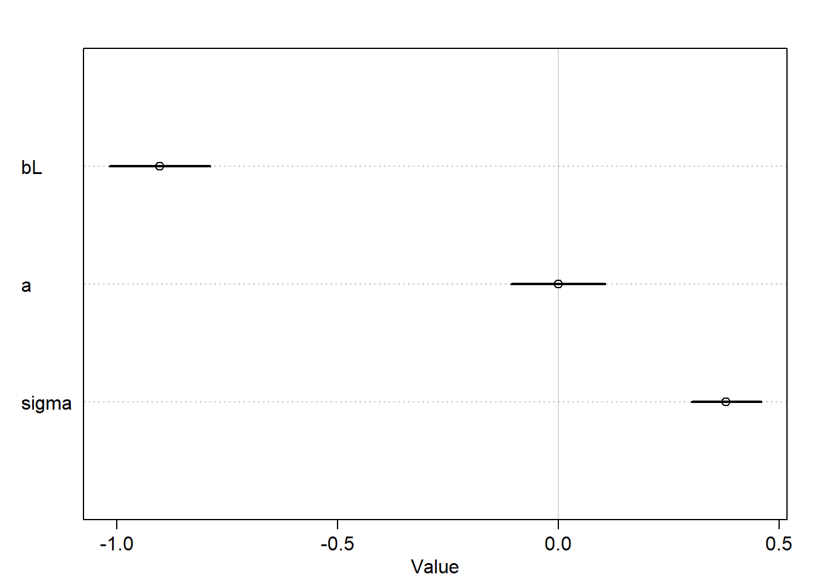
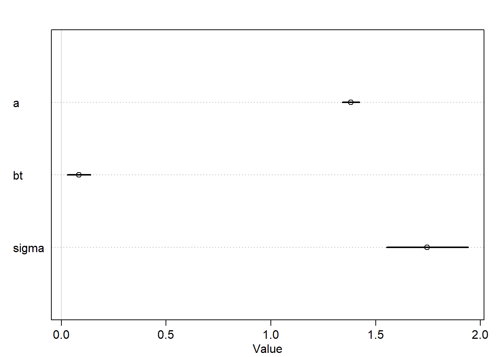
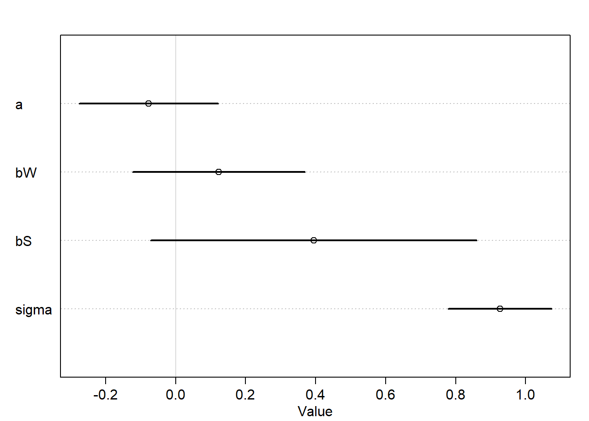

This chapter is about the 3 different hazards that may raise when adding variables to a model: 1. Multicollinearity 2. Post-treatment bias 3. Collider bias
Knowing about these, the chapter will introduce a careful framework that can tell us which variables we must and must not add to a model in order to arrive at valid inferences.
Example: Simulated science distortion
set.seed(1914)N <-200p <-0.1nw <-rnorm(N)tw <-rnorm(N)s <- nw + tw# find the 90th percentile of dataq <-quantile(s, 1-p)# keep the points that are higher than the 90th percentileselected <-ifelse(s >= q, TRUE, FALSE)cor(tw[selected], nw[selected])
[1] -0.7680083
# notice the negative correlation as in figure 6.1
Multicollinearity
When two predictors are very strongly correlated, i.e. have the same information (conditional on other variables in the model), including both in a model may lead to confusion. The posterior will be able to make good predictions, but won’t be able to make any claims about which leg is more important (i.e. the posterior dist of coefficients would be weird).
This is because the multiple linear regression answers the question:
What is the value of knowing each predictor, after already knowing all of the other predictors?
Example: predicting height using both legs lengths
N <-100set.seed(909)height <-rnorm(N,10,2)leg_prop <-runif(N,0.4,0.5) # leg as prop of heightleg_left <- leg_prop * height +rnorm(N,0,0.02) # sim left leg as proportion + errorleg_right <- leg_prop * height +rnorm(N,0,0.02) # sim right leg as proportion + errord <-data.frame(height, leg_left, leg_right)
library(rethinking)
Loading required package: cmdstanr
This is cmdstanr version 0.7.1
- CmdStanR documentation and vignettes: mc-stan.org/cmdstanr
The following objects are masked from 'package:stats':
mad, sd, var
The following objects are masked from 'package:base':
%in%, match
Loading required package: parallel
rethinking (Version 2.40)
Attaching package: 'rethinking'
The following object is masked from 'package:stats':
rstudent
m6.1<-quap(alist( height ~dnorm(mu, sigma), mu <- a + bl*leg_left + br*leg_right, bl ~dnorm(2,10), br ~dnorm(2,10), a ~dnorm(10,100), sigma ~dexp(1) ),data=d)plot(precis(m6.1))

Notice how the interval is very wide for both coefficients bl and br and also contains zero.
Let’s check the joint posterior dist. of both leg lengths
post <-extract.samples(m6.1)plot(bl~br, post, col=col.alpha(rangi2,0.1), pch=16)

Since both leg variables contain almost exactly the same information, then they cannot be pulled apart because they never separately influence the posterior mean. The posterior dist. in this example produced a good estimate of the sum of bl and br:
\[
\mu_i = \alpha+(\beta_1 + \beta_2)x_i
\]
sum_blbr <- post$bl + post$brdens(sum_blbr, col=rangi2, lwd=2, xlab="sum of bl and br")

Mean of the sum approx. equals 2
library(rethinking)m6.2<-quap(alist( height ~dnorm(mu, sigma), mu <- a + bl*leg_left, bl ~dnorm(2,10), a ~dnorm(10,100), sigma ~dexp(1) ),data=d)
Caution, model may not have converged.
Code 1: Maximum iterations reached.
plot(precis(m6.2))
Warning in sqrt(diag(vcov(model))): NaNs produced
Warning in sqrt(diag(vcov(model))): NaNs produced
Warning in sqrt(diag(vcov(model))): NaNs produced
Error in plot.window(xlim = xlim, ylim = ylim, log = log): need finite 'xlim' values
Example: Milk
This example discusses the causal aspect of multicollinearity.
data("milk")d <- milkd$K <-standardize(d$kcal.per.g)d$F <-standardizeDSD(d$perc.fat) # standardized percent of fat
Error in standardizeDSD(d$perc.fat): could not find function "standardizeDSD"
d$L <-standardize(d$perc.lactose) # standardized percent of lactose
We want to model the total energy content using the predictors F and K.
Let’s start simple and build two models for each predictor:
m6.3<-quap(alist( K ~dnorm(mu, sigma), mu <- a + bF*F, bF ~dnorm(0,0.5), a ~dnorm(0,0.2), sigma ~dexp(1) ),data=d)m6.4<-quap(alist( K ~dnorm(mu, sigma), mu <- a + bL*L, bL ~dnorm(0,0.5), a ~dnorm(0,0.2), sigma ~dexp(1) ),data=d)
precis(m6.3)
mean sd 5.5% 94.5%
bF 7.655557e-07 0.5000000 -0.7990958 0.7990973
a 5.327199e-08 0.1335867 -0.2134972 0.2134973
sigma 9.666296e-01 0.1238653 0.7686689 1.1645903
plot(precis(m6.3))

precis(m6.4)
mean sd 5.5% 94.5%
bL -9.024560e-01 0.07132850 -1.0164527 -0.7884593
a 6.259896e-07 0.06661636 -0.1064652 0.1064664
sigma 3.804654e-01 0.04958264 0.3012228 0.4597081
plot(precis(m6.4))

It seems that both models are mirror images of one another, where the posterior mean of bF is positive and for bL is negative and each has a strong association with the outcome.
Let’s see what happen when we use both predictors in a model:
m6.5<-quap(alist( K ~dnorm(mu, sigma), mu <- a + bL*L + bF*F, bL ~dnorm(0,0.5), bF ~dnorm(0,0.5), a ~dnorm(0,0.2), sigma ~dexp(1) ),data=d)
Notice that the std. dev. now is approx. doubled and the means are close to zero (i.e. the association isn’t strong between predictors and outcome). Let’s explore the variables further:
It is clear that L and F are strongly associated and that’s why the multicollinearity happened since either predictors helps in predicting kcal.per.g but neither helps as much once you already know the other.
Away from statistics, there is a confounder that influences L and F making them correlated (see p.169).
Tips to avoid collinearity
Do EDA (e.g. scatterplot matrices) before modelling to see the existing correlations between variables and hence deciding which variables to use as predictors, since it is bad to use redundant variables that are highly correlate as predictors.
Doing EDA (e.g. scatterplot matrices) and finding the pairwise correlation before modelling to see the existing highly correlated predictors and drop them isn’t enough. It is the conditional associations that matter, not correlation. Also, the associations within the data alone are not enough to decide what to do.
In other words, there is a confounder that makes predictors/variables associated and this is out of the data and relevant to the scientific model.
Non-identifiability: It is a family of problems that occur in fitted models. It refers to the fact that the structure of data and model don’t make it possible to estimate the parameter’s value
Multicollinearity is a member of Non-identifiability
When this happens with Bayesian models, the resulted posterior dist will be very similar to prior, so comparing both would be a good idea to see how much information the model extracted from the data.
When posterior and prior are similar, it doesn’t mean that the calculation is wrong, but that’s an indicator to ask a better questions since the model answers the questions you are asking.
Post-treatment Bias
Including the post-treatment variables can actually mask the treatment itself.
When your goal is to make a causal inference about the treatment, you shouldn’t include the post-treatment variable because it represents the post-treatment effect.
Example: say in an RCT we want to test the effect of treatment (anti fungus) on plant growth knowing that it targets the fungus. The variables would be:
Initial height (measured before the treatment)
Treatment (influences the presence of fungus)
Fungus existence (post-treatment effect and measured after applying the treatment)
Final height (measured after applying the treatment)
Simulate data:
set.seed(71)N <-100# initial heighth0 <-rnorm(N,10,2)# treatment assignmenttreatment <-rep(0:1, eac=N/2)# fungusfungus <-rbinom(N, size=1, prob=0.5- treatment*0.4)# final hieght after growth (remember that the fungus impacts the growth)h1 <- h0 +rnorm(N, 5-3*fungus)d <-data.frame(h0=h0, h1=h1, treatment=treatment, fungus=fungus)precis(d, hist=FALSE)
When modeling, we want to add a variable representing the proportion of growth which is 0 < p < 1. So, it is good to have it distributed according to log-normal dist.
m6.6<-quap(alist( h1 ~dnorm(mu, sigma), mu <- p*h0, p ~dlnorm(0, 0.25), sigma~dexp(1) ), data=d)precis(m6.6)
mean sd 5.5% 94.5%
p 1.426628 0.01759834 1.398503 1.454754
sigma 1.792106 0.12496794 1.592383 1.991829
So the average growth is 40%.
Now, let’s include the treatment and fungus variables to model. By doing so, the proportion of growth will be a function of treatment and fungus presence.
m6.7<-quap(alist( h1 ~dnorm(mu,sigma), mu <- h0*p, p <- a + bt*treatment * bf*fungus, a ~dlnorm(0,0.25), bt ~dnorm(0,0.5), bf ~dnorm(0,0.5), sigma ~dexp(1) ),data=d)precis(m6.7)
The treatment seems not to be associated a lot with growth unlike what we expect.
Let’s try removing the fungus variable
m6.8<-quap(alist( h1 ~dnorm(mu,sigma), mu <- h0*p, p <- a + bt*treatment, a ~dlnorm(0,0.25), bt ~dnorm(0,0.5), sigma ~dexp(1) ),data=d)plot(precis(m6.8))

Now, the interval is more tight and doesn’t include zero which means the association between treatment and growth now is stronger comparing with the result of the previous model. This is because including post-treatment variables can mask the treatment itself.
d <-data.frame(x=sim_x, y=sim_y, z=sim_z)m2 <-quap(alist( y ~dnorm(mu, sigma), mu <- a + bz*z, bz ~dnorm(0,1), a ~dnorm(0,1), sigma ~dexp(1), z~dnorm(mu_z, sigma_z), mu_z <- a_z + bx*x, bx ~dnorm(0,1), a_z ~dnorm(0,1), sigma_z ~dexp(1) ),data = d)plot(precis(m2))
Warning in sqrt(diag(vcov(model))): NaNs produced
Warning in sqrt(diag(vcov(model))): NaNs produced
Warning in sqrt(diag(vcov(model))): NaNs produced
Error in plot.window(xlim = xlim, ylim = ylim, log = log): need finite 'xlim' values
The multicollinearity is here as y and x provide redundant information. In the leg example, the DAG is L <- H -> R and here the DAG is X -> Z -> Y. However, the conditional independence is different although the predictors are highly correlated.
H1
data("WaffleDivorce")d <- WaffleDivorce# load data and standardaized$S =as.integer(d$South)d$M =standardize(d$Marriage)d$A =standardize(d$MedianAgeMarriage)d$W =standardize(d$WaffleHouses)d$D =standardize(d$Divorce)
Let’s create the DAG as in p. 187
library(dagitty)dag <-dagitty("dag{ S -> W -> D; S -> M -> D; S -> A -> D; S -> A -> M -> D}")
Let’s check the adjustment sets:
adjustmentSets(dag, exposure ="W", outcome ="D")
{ A, M }
{ S }
These act as confounders. Let’s adjust for S by Including it as a covariate in the regression model.
mh1 <-quap(alist( D ~dnorm(mu, sigma), mu <- a + bW*W + bS*S, a ~dnorm(0, 0.2), bW ~dnorm(0, 0.5), bS ~dnorm(0, 0.5), sigma ~dexp(1) ),data = d)
plot(precis(mh1))

We can see that the causal effect of W on D is very small which isnot surprising.
H2
impliedConditionalIndependencies(dag)
A _||_ W | S
D _||_ S | A, M, W
M _||_ W | S
H3
data("foxes")d <- foxesstr(d)
'data.frame': 116 obs. of 5 variables:
$ group : int 1 1 2 2 3 3 4 4 5 5 ...
$ avgfood : num 0.37 0.37 0.53 0.53 0.49 0.49 0.45 0.45 0.74 0.74 ...
$ groupsize: int 2 2 2 2 2 2 2 2 3 3 ...
$ area : num 1.09 1.09 2.05 2.05 2.12 2.12 1.29 1.29 3.78 3.78 ...
$ weight : num 5.02 2.84 5.33 6.07 5.85 3.25 4.53 4.09 6.13 5.59 ...
mh3 <-quap(alist(# g -> w <- av w ~dnorm(mu,sigma), mu <- a + bAV*av + bG*g, bAV ~dnorm(0,1), bG ~dnorm(0,1), a ~dnorm(0, 1), sigma ~dexp(1),# a -> av av ~dnorm(muAV, sigmaAV), muAV <- aAV + bA*a, bA ~dnorm(0,1), aAV ~dnorm(0, 1), sigmaAV ~dexp(1),# av -> g g ~dnorm(muG, sigmaG), muG <- aG + bAG*g, bAG ~dnorm(0,1), aG ~dnorm(0, 1), sigmaG ~dexp(1) ), data=d)
Error in quap(alist(w ~ dnorm(mu, sigma), mu <- a + bAV * av + bG * g, : non-finite finite-difference value [9]
Start values for parameters may be too far from MAP.
Try better priors or use explicit start values.
If you sampled random start values, just trying again may work.
Start values used in this attempt:
bAV = 0.30243871856132
bG = 0.925991669299026
sigma = 0.641444138716906
bA = -0.809961932175989
aAV = -0.667753358831943
sigmaAV = 0.679275907576084
bAG = -1.17343224114012
aG = 0.542118866918761
sigmaG = 0.44711409509182